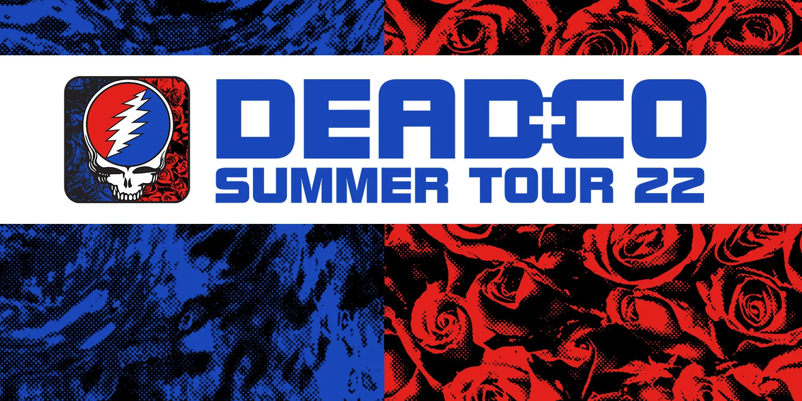

This was the first time that I got to see Dead and Company, which is basically The
Greatful Dead after a few of the band members passed away. This is so far the only band
that I have seen headline twice at a stand alone concert.
This is the setlist for the show that I saw.
Feel Like a Stranger
They Love Each Other
It's All Over Now
Row Jimmy
West L.A. Fadeaway
Loose Lucy
Ship of Fools
Passenger
Lost Sailor
Saint of Circumstance
He's Gone
Scarlet Begonias
Fire on the Mountain
Drums
Space
I Need a Miracle
Dear Prudence
Throwing Stones
Knockin' on Heaven's Door
If you would like to see a more in depth version of the whole show vist setlist.fm
Second Time

Pittsburgh, Star Lake Pavilion
July 12th, 2022
I was really glad that I got to see them a second time, especially since Bob weir
unfortunitely passed away in 2025 so I won't be able to see them again in any official
compacity.
The Music Never Stopped
Dire Wolf
Friend of the Devil
Foolish Heart
They Love Each Other
West L.A. Fadeaway
Lost Sailor
Saint of Circumstance
Big Railroad Blues
Dark Star
El Paso
He's Gone
Eyes of the World
Drums
Space
Hell in a Bucket
Dear Prudence
U.S. Blues
Ripple
If you would like to see a more in depth version of the whole show vist setlist.fm